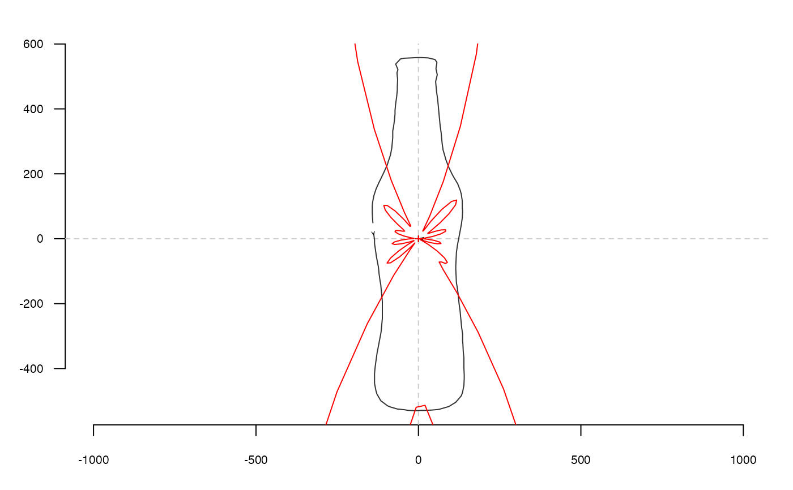

rfourier computes radii variation Fourier analysis from a matrix or a
list of coordinates where points are equally spaced radii.
Usage
rfourier(x, ...)
# Default S3 method
rfourier(x, nb.h, smooth.it = 0, norm = FALSE, ...)
# S3 method for class 'Out'
rfourier(x, nb.h = 40, smooth.it = 0, norm = TRUE, thres = pi/90, ...)
# S3 method for class 'list'
rfourier(x, ...)Arguments
- x
A
listormatrixof coordinates or anOutobject- ...
useless here
- nb.h
integer. The number of harmonics to use. If missing, 12 is used on shapes; 99 percent of harmonic power on Out objects, both with messages.- smooth.it
integer. The number of smoothing iterations to perform.- norm
logical. Whether to scale the outlines so that the mean length of the radii used equals 1.- thres
numerica tolerance to feed is_equallyspacedradii
Value
A list with following components:
anvector of \(a_{1->n}\) harmonic coefficientsbnvector of \(b_{1->n}\) harmonic coefficientsaoao harmonic coefficient.rvector of radii lengths.
Details
see the JSS paper for the maths behind. The methods for Out objects
tests if coordinates have equally spaced radii using is_equallyspacedradii. A
message is printed if this is not the case.
Note
Silent message and progress bars (if any) with options("verbose"=FALSE).
Directly borrowed for Claude (2008), and called fourier1 there.
See also
Other rfourier:
rfourier_i(),
rfourier_shape()
Examples
data(bot)
coo <- coo_center(bot[1]) # centering is almost mandatory for rfourier family
coo_plot(coo)
rf <- rfourier(coo, 12)
rf
#> $an
#> [1] 1.041357e-14 -4.745309e+02 8.327818e-01 2.719483e+02 -1.430955e+01
#> [6] -1.110619e+02 2.489911e+01 -1.011701e+00 -1.771458e+01 5.542552e+01
#> [11] 6.786737e-01 -5.902187e+01
#>
#> $bn
#> [1] 9.497073e-14 -1.108663e+01 -5.032796e+01 1.187178e+01 1.332257e+02
#> [6] 4.068663e+00 -1.709325e+02 -1.013725e+01 1.391797e+02 1.085760e+01
#> [11] -7.449979e+01 -2.355442e+00
#>
#> $ao
#> [1] 669.1267
#>
#> $r
#> [1] 139.1167 135.1134 135.8741 136.8427 141.0323 143.5802 151.2095 162.8116
#> [9] 175.5101 182.5204 198.0176 214.4721 223.4262 241.8735 260.7074 269.7883
#> [17] 289.8301 310.0117 320.9760 342.0111 363.0862 373.1664 393.9569 415.7375
#> [25] 436.2997 445.8192 465.8759 484.9159 494.7304 512.1917 523.5711 525.7951
#> [33] 528.7641 528.6261 529.8403 529.9849 528.9630 529.2840 529.5332 529.6230
#> [41] 526.6029 525.3373 516.8135 501.5361 492.0222 473.0432 453.3357 442.8940
#> [49] 422.7064 402.9506 393.5883 373.2914 353.4743 342.9622 323.7894 303.5315
#> [57] 283.8734 274.5648 254.3851 234.8608 225.9056 207.4851 188.9917 179.2651
#> [65] 163.2102 148.4020 142.2876 131.8906 124.2115 121.7441 122.3408 126.4329
#> [73] 133.8555 138.8126 149.4057 160.3977 165.1035 178.0327 190.2983 196.3891
#> [81] 207.9233 218.2629 225.0539 239.8685 256.5975 274.7171 283.4915 303.0400
#> [89] 323.0170 333.5460 353.5262 373.8148 383.4986 404.8965 425.3750 435.1409
#> [97] 455.5781 476.1955 487.0166 508.4428 526.8989 546.1072 554.4755 557.9344
#> [105] 558.1869 558.1342 557.6074 557.8729 556.8590 542.6716 524.9317 515.3814
#> [113] 494.2988 473.6200 462.7267 442.2440 421.9866 401.6471 390.8306 370.6053
#> [121] 350.7010 341.4100 321.0176 301.2409 290.9421 272.0980 254.7364 246.6077
#> [129] 230.9259 217.6545 212.0765 201.6712 191.0722 180.1960 174.3784 163.0992
#> [137] 152.9502 148.4252
#>
rfi <- rfourier_i(rf)
coo_draw(rfi, border='red', col=NA)

# Out method
bot %>% rfourier()
#> some shapes seem(s) to have some identical coordinates
#> 'nb.h' not provided and set to 60 (99% harmonic power)
#> An OutCoe object [ radii variation (equally spaced radii) analysis ]
#> --------------------
#> - $coe: 40 outlines described, 60 harmonics
#> # A tibble: 40 × 2
#> type fake
#> <fct> <fct>
#> 1 whisky a
#> 2 whisky a
#> 3 whisky a
#> 4 whisky a
#> 5 whisky a
#> 6 whisky a
#> # ℹ 34 more rows